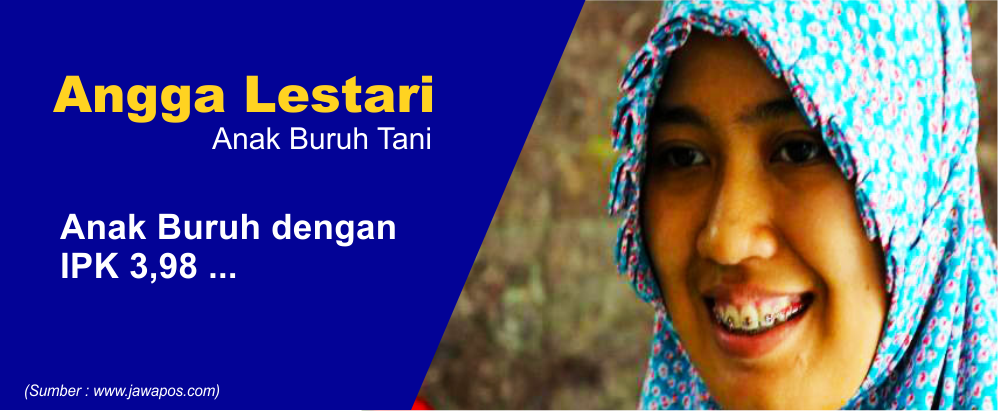

ANAK PETANI LULUS DENGAN IPK 3,98Mungkin banyak diantara kita adalah orang berada yang mampu meneruskan pendidikan sampai jenjang yang tinggi. Tapi apakah kita pernah merasa bersyukur atas apa yang kita punya? Apakah kita tahu, masih banyak orang di luar sana yang mempunyai mimpi untuk sekolah tinggi namun harus menguburnya dalam-dalam karena keterbatas ekonomi. Rasa sykukur itu bisa kita lakukan dengan belajar yang sungguh-sungguh agar kita mendapat hasil yang terbaik. Ada seorang anak petani yang bisa menjadi inspirasi bagi kita semua. Karena semangat juang untuk meneruskan pendidikan dan memanfaatkan kesempatan pendidikan yang ada untuk mendapat nilai yang baik. Namanya Angga Dwi Tuti Lestari. Wajah gadis berjilbab ini diliputi rona kebahagiaan. Angga yang beralamat di Cibuk Lor 1, Margoluwih, Sayegan, Sleman, Daerah Istimewa Yogyakarta ini berhasil menjadi lulusan terbaik dari Universitas Sebelas Maret Solo. Dia lulus dengan nilai Indeks Prestasi 3,98 saat diwisuda, Sabtu 14 Juni 2014. Angga yang biasa disapa Eng adalah mahasiswa Jurusan Biologi, Fakultas MIPA dari jalur beasiswa Bidikmisi yang khusus diperuntukkan untuk mahasiswa pintar dan berprestasi tetapi berasal dari keluarga kurang mampu. Dara kelahiran 21 Februari 1992 ini memang berasal dari keluarga tak mampu. Bapaknya, Supriyanto, bekerja sebagai buruh tani. Sementara ibunya,Sugiyanti, hanya sebagai ibu rumah tangga. Namun latar belakang ekonomi keluarga tidak menjadikan niat Eng untuk menempuh pendidikan tinggi surut. Bapaknya yang hanya lulusan SMP dan ibunya yang juga tak lulus SD memicu semangat Eng agar menjadi anak yang bisa dibanggakan bagi keluarga. Eng mengakui meski dalam kondisi ekonomi yang kekurangan tak membuatnya menjadi anak yang menuntut macam-macam kepada orang tuanya. Ia justru bersedia membantu orangtuanya saat bekerja di sawah. Kondisi ekonomi keluarga yang kekurangan justru membuat Eng bersyukur. Tempaan kondisi ekonomi, membuatnya bisa mengecap prestasi. Eng sejak SD hingga kuliah selalu berprestasi. Eng membuktikan, bahwa cita-cita kita bisa tercapai asalkan kita mempunyai niat dan usaha. Walau kelihatannya mustahil, Eng bisa melakukannya. Eng juga mengajarkan kita untuk lebih mensyukuri apa yang kita punya. |
Terbaru
Terpopuler
|


BRIGJEN UMAR SEPTONO: JENDRAL POLISI YANG RENDAH HATI
MBAH SADIMAN: PAHLAWAN PENGHIJAUAN
| MORAL CHALLENGE? Yuk Mulai..!! |
#4 |
MENTAATI PERATURAN DAN NORMAKalau kita sering melanggar aturan, baik aturan sekolah, lalu lintas, dan lainnya, cobalah untuk mulai mentaati aturan dan norma yang ada! |
Tentang Kami
Inspire The Moral (Spiral) merupakan website yang bertujuan untuk menginspirasi semua orang mulai dari yang muda sampai yang tua. Dan juga memberikan Moral Challenge untuk Melakukan aksi nyata yang bermoral dan memberi inspirasi serta teladan bagi banyak orang. Selengkapnya.. |
Ikuti Kami |